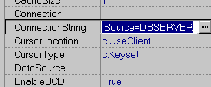
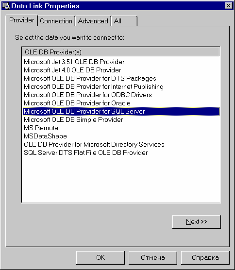
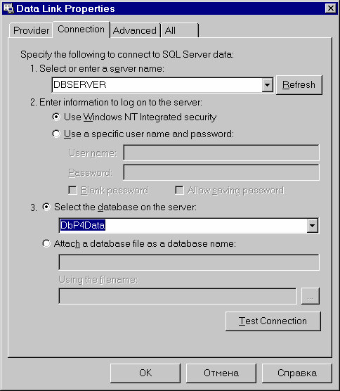
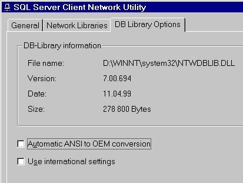

Особенности реализации клиентской части
До версии 6.5 основным интерфейсом доступа к MS SQL Server со стороны клиента была библиотека DB-Library. Она реализовывала набор низкоуровневых интерфейсов, позволяющих организовать взаимодействие с сервером. Однако, в версии 7 Microsoft ввела новый интерфейс доступа – OLE DB. В связи с этим развитие DB-Library прекращено, и она оставлена лишь для обратной совместимости. Доступ через неё не поддерживает новых расширений сервера (UNICODE, текстовые поля до 8 Кбайт, тип данных GUID). Однако, старые приложения, не использующие этой функциональности сохраняют работоспособность, хотя может понадобиться некоторая их переделка в связи с изменениями в 7-й версии. Драйвер SQL Links реализует доступ при помощи DB-Library, и воспользоваться расширениями через него невозможно. Для обеспечения полноценного доступа к MS SQL Server 7.0 и выше необходимо использовать новый набор компонентов ADOExpress, включенный в Delphi 5. Работа через BDE возможна, но при этом сервер доступен в объеме возможностей версии 6.х. Также, существует ODBC драйвер, через который возможен полнофункциональный доступ к серверу. При работе с сервером версии 2000 на работу через BDE накладываются дополнительные ограничения, связанные с использованием индексов по вычисляемым полям.
Доступ при помощи ADOExpressActiveX Data Objects (ADO) – надстройка над интерфейсом OLE DB, позволяющая обеспечить бизнес приложениям высокоуровневый доступ к данным. Эта технология включена в Windows 2000, а на остальных версиях доступна в виде бесплатного обновления. ADO автоматически устанавливается на компьютер при установке клиента MS SQL Server
Начиная с версии 5.0 Delphi, в редакции Enterprise, включает в себя набор компонентов, позволяющих работать с ADO. Пользователи профессиональной редакции могут приобрести эти компоненты в виде отдельного продукта.

В качестве драйверов БД ADO использует так называемые OLE DB провайдеры, которые представляют собой COM-серверы, реализующие предопределенный набор COM-интерфейсов. Например, для доступа к набору данных служит интерфейс IRowset, возвращаемый OLE DB при открытии этого набора данных. Для указания ADO, какой провайдер и с какими параметрами должен использоваться служит строка подключения, которая содержится в свойстве ConnectionString компонентов ADOExpress
Для её построения в состав Delphi включен мастер, позволяющий задать параметры графически

Чтобы подключиться к MS SQL Server, необходимо указать тип провайдера «Microsoft OLE DB Provider for SQL Server» и в следующем окне заполнить информацию, необходимую для подключения

После этого можно использовать компоненты ADO как обычных наследников TDataSet
Необходимо отметить, что ADO в значительной мере оптимизировано для использования совместно с MS SQL Server 7.0. Полностью поддерживается модель работы Prepare-Execute, позволяющая эффективно кэшировать планы запросов, серверные курсоры (свойства CursorLocation и CursorType), возможность возврата запросом или хранимой процедурой нескольких наборов данных, прямой доступ к таблицам на сервере (без промежуточной генерации запроса). Например, задав в TADOQuery.SQL следующий код:
SELECT * FROM One SELECT * FROM Two
Можно в приложении получить два набора данных:
ADOQuery1.Open; ADODataSet1.RecordSet := ADOQuery1.NextRecordSet;
Решена проблема, возникающая при попытке выполнить запрос при не до конца загруженных данных другого запроса. ADOExpress, в этом случае, автоматически открывает новое временное соединение с сервером и выполняет запрос, используя это соединение.
В оригинальной версии Delphi 5 ADOExpress содержит ряд серьёзных ошибок, которые делают работу при помощи этих компонентов практически невозможной. Поэтому настоятельно рекомендуется установка пакета обновления Delphi и последнего обновления ADO (AePatch.exe), доступного с сайта http://community.borland.com из раздела Code Central
Доступ при помощи BDEЭтот способ доступа не является рекомендуемым, однако для многих приложений, написанных еще для версии 6.х он может понадобиться из соображений обратной совместимости.
В составе BDE поставляется драйвер SQL Link для Microsoft SQL Server. Этот драйвер использует библиотеку DB-Library, что исключает полноценный доступ к возможностям сервера. При работе через этот драйвер, например, нельзя использовать символьные данные в кодировке Unicode, некоторые системные функции. Если необходимо получить доступ к таким данным, необходимо в запросе явно преобразовать их в один из поддерживаемых типов данных, например:
SELECT CAST(USER_NAME() AS VARCHAR(255))
При работе с сервером при помощи BDE и драйвера SQL Link необходимо помнить следующее:

| • | В зависимости от кодовой страницы сервера он может воспринимать дату в различных форматах. Например: '1 Apr 1999' для английской и '1 Апр 1999' для русской. DB-Library пытается распознать кодовые страницы клиента и сервера и преобразовать дату в нужный вид. Однако при этом часто возникает ошибка, когда дата уходит на сервер не на том языке. Для исключения этой ошибки необходимо проверить язык, установленный в качестве умолчания на сервере (SET LANGUAGE) и в программе Client Network Utility на закладке "DB Library Options" отключить флажок «Use International Settings», если на нем установлен us_english или включить, если установлен русский. Другим способом избежать данной проблемы является передача даты на сервер в виде текстовой строки вида 'yyyymmdd'. При преобразовании 8-символьной строки в дату сервер всегда интерпретирует её таким образом и исключает возможность ошибки. Сделать это можно так: |
Params[0].AsString := FormatDateTime('yyyymmdd',DateTimeVariable);
| • | При выполнении запроса на выборку данных сервер ожидает, что клиентская программа считает все запрошенные данные до посылки на сервер следующего оператора. Однако BDE загружает записи с сервера только по мере необходимости (например, открыв в TDBGrid большую таблицу, мы прочтем с сервера только записи, которые поместятся на экран в её видимой части). Остальные записи считываются по мере необходимости, например при прокрутке таблицы. Если в этой ситуации попытаться выполнить еще один запрос – BDE принудительно выполняет FetchAll для всех открытых, но не считанных до конца запросов. Это может повлечь неожиданную задержку. |
| • | При использовании индексов по вычисляемым полям, появившихся в MSSQL 2000, необходимо, чтобы для сессии были установлены параметры: |
В противном случае, таблица, по которой определен индекс по вычисляемому полю будет доступна только на чтение. Приведенный набор настроек соответствует умолчаниям для сессий OLE DB и ODBC. DB-Library инициализирует их по другому и Вы должны явно задать требуемые значения после соединения с сервером.